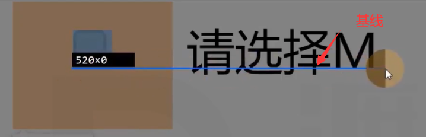

一、文字

文字是通过一些文字制作软件制作的，比如fontforge
制作文字时，会有几根参考线，不同的文字类型，参考线不一样。同一种文字类型，参考线一致。
二、font-size
- 字体大小，设置的是文字的相对大小
文字的相对大小：1000、2048、1024
相当于活字印刷术金属框的尺寸
- 文字顶线到底线的距离，是文字的实际大小
- content-area，内容区
- 行盒的背景，覆盖content-area
三、line-height
- 顶线向上延申的空间，和底线向下延申的空间，两个空间相等，该空间叫做gap(空隙)
- gap默认情况下，是字体设计者决定
- top到botoom，叫做virtual-area(虚拟区)，既行高
- line-height:normal，默认值，使用文字默认的gap
- 文字一定出现一行的最中间吗？错误
- gap默认情况下，是字体设计者决定
- content-area一定出现在virtual-area的中间吗？正确
四、vertical-align
只有行盒才有参考线 所以文字实在匿名行盒里面的
4.1 原理
- 一个元素如果子元素出现行盒，该元素内部也会产生参考线，如果父元素设置了font-size、font-family、linegeight这三个属性，那么父元素基线就确定了，然后设置子元素vertical-align，来调整子元素的基线
4.2 取值
- 预设值
- baseline：该元素的基线与父元素的基线对齐(默认值)
p { |
super: 该元素的基线与父元素的上基线对齐
sub：该元素的基线与父元素的下基线对齐
text-top: 该元素的virtual-area的顶边，对齐父元素的text-top
text-bottom: 该元素的virtual-area的底边，对齐父元素的text-bottom
top：该元素的virtual-area的顶边(该行中最高元素的顶边)，对齐line-box的顶边
bottom：该元素的virtual-area的底边(该行中最高元素的底边)，对齐line-box的底边
middle: 该元素的中线(content-area的一半)，与父元素的X字母高度一半的位置对齐
数值：相对于基线的偏移量，向上为正数，向下为负数
百分比：相对于基线的偏移量，百分比是相对于自身virtual-area的高度
五、行框line-box
line-box实际上就是一个行盒，只不过比较特殊
行盒组合起来，可以形成多行，每一行的区域叫做line-box
line-box的顶边是该行内所有行盒最高顶边，底边是该行行盒的最低底边
- 实际上，一个元素的实际占用高度(高度自动)，高度的计算通过line-box计算
- line-box是承载文字内容的必要条件，没有行框就不会显示文字内容，以下情况不生成行框
某元素内部没有任何行盒
某元素字体大小为0
这就解决了块盒内部img图片底部白边的问题
六、可替换元素和行块盒的基线
- 可替换元素
- 图片：基线位置位于图片的下外边距(没设置margin，图片的下边缘就是基线)，这解释了白边问题
- 表单元素：基线位置在内容底边

- 行块盒
- 行块盒最后一行有line-box，用最后一行的基线作为整个行块盒的基线。

- 如果行块盒内部没有行盒，则使用下外边距作为基线